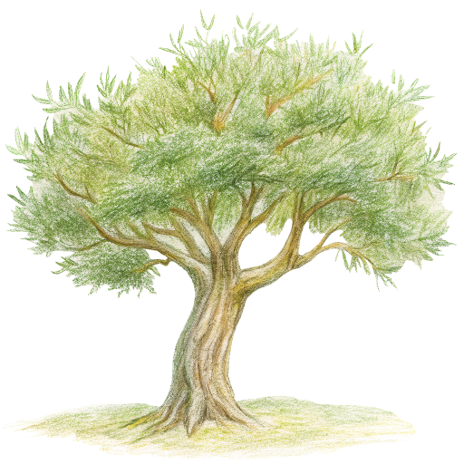

<div class="sidebar">
    <div class="logo">
        <a href="index.html">
            
        </a>
    </div>
    <p><a href="/index.html">Max Forsey</a></p>
    <p><a href="/writing.html">writing</a></p>
    <p><a href="/index.html">about</a></p>
    <p><a href="/work.html">work</a></p>
    <div class="interests-section">
        <p><a href="#" class="toggle-interests"><span class="toggle-icon"></span></a></p>
        <div class="interests-content">
            <p><a href="/books.html">books</a></p>
            <p><a href="/design.html">design</a></p>
            <p><a href="/films.html">films</a></p>
            <p><a href="/music.html">music</a></p>
            <p><a href="/tools.html">tools</a></p>
            <p><a href="/quotes.html">quotes</a></p>
        </div>
    </div>
</div>